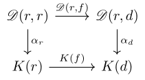
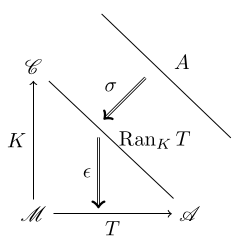
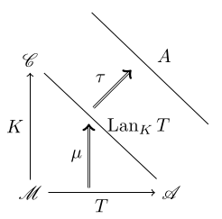
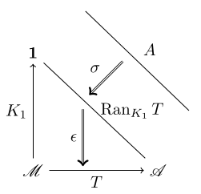
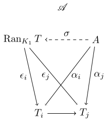
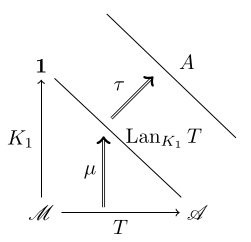
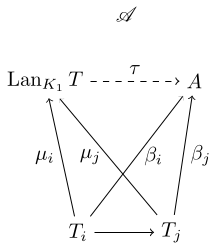

射は，圏という世界における関係を表す矢印であり， 圏論において対象は矢印の始まりと終わりにつけられる名称に過ぎず， 対象のもつ性質は射によってのみ特徴づけられる．
圏 (category) は，対象 (object) と射 (arrow, morphism) の集まりからなり， 以下を満たす．
任意の射は，域 (domain) と余域 (codomain) と呼ばれる対象をもつ． 射 \(f\) の域を\(\mathop{\mathrm{dom}}(f)\)，余域を \(\mathop{\mathrm{cod}}(f)\) と表記する． また，\(\mathop{\mathrm{dom}}(f)=A\)，\(\mathop{\mathrm{cod}}(f)=B\) であるとき \(f:A\to B\) と表記する．
任意の射 \(f,g\) について，\(\mathop{\mathrm{cod}}(f)=\mathop{\mathrm{dom}}(g)\) ならば， \(f,g\) の合成 (composition) \(g\circ f\) が一意に存在する．
任意の射 \(f,g,h\) について， \(\mathop{\mathrm{cod}}(f)=\mathop{\mathrm{dom}}(g)\) かつ \(\mathop{\mathrm{cod}}(g)=\mathop{\mathrm{dom}}(h)\) ならば， \(h\circ(g\circ f)=(h\circ g)\circ f\) が成り立つ．
任意の対象 \(A\) について恒等射 (identity) \(\mathrm{id}_{A}:A\to A\) が一意に存在し， 任意の射 \(f:A\to B\) について \(f\circ \mathrm{id}_{A}=\mathrm{id}_{B}\circ f=f\) が成り立つ．
また，圏 \(\mathscr{C}\) の対象の集まりを \(\mathscr{C}\)， 射 \(A\to B\) の集まりを \(\mathscr{C}(A,B)\) と表記する．
射 \(f:A\to B\) について以下を満たす射 \(g:B\to A\) を \(f\) の逆射 (inverse) といい， \(f^{-1}\) と表記する: \[g\circ f=\mathrm{id}_{A}\wedge f\circ g=\mathrm{id}_{B}.\]
任意の射について，逆射は高々1つである．
Proof. 射 \(f:A\to B\) の相異なる逆射 \(g,h:B\to A\) が存在すると仮定する． \[g=g\circ\mathrm{id}_{B}=g\circ(f\circ h)=(g\circ f)\circ h=\mathrm{id}_{A}\circ h=h.\] これは仮定に矛盾し，定理は示された． ◻
射 \(f\) について逆射 \(f^{-1}\) が存在するとき， \(f\) は同型射 (isomorphism) であるという．
対象は性質をもたないため， 対象どうしの「本質的な等しさ」なるものも射によって定められる．
圏 \(\mathscr{C}\) の対象 \(A,B\) について同型射 \(A\to B\) が存在するとき， \(A\) と \(B\) は同型 (isomorphic) であるといい，\(A\simeq B\) と表記する．
前述のとおり，圏論では対象そのものが既に何らかの性質を備えているとは考えない． むしろ対象の「性質」とは他の対象との関係性によって初めて問題にできるものだ．
素朴な集合論においては， まず集合が要素をもち，それらの対応づけとして集合間の写像が定義される． 圏論はその逆をいく．「集合」という何かの間に写像を定めてしまい， それによって初めて集合の要素を定義する．
集合圏は，任意の集合を対象とし，それらの間の任意の写像を射とする圏である．
2つの世界 (圏) を比較したときに，世界を構成する要素は全く違っていても， それらの関係性に着目するとなんとなく似ている気がしてくることがある． 函手はそのようなアナロジーを表現する矢印である．
2つの圏 \(\mathscr{C},\mathscr{D}\) の対象から対象へ，射から射へ対応づける写像 \(F:\mathscr{C}\to\mathscr{D}\) が以下の条件を満たすとき， \(F\) を函手 (functor) という．
\(F(A\to B)=F(A)\to F(B)\),
\(F(\mathrm{id}_{A})=\mathrm{id}_{F(A)}\),
\(F(g\circ f)=F(g)\circ F(f)\).
すなわち函手は域と余域，恒等射と射の合成を保存する写像である． のちに「圏の圏」なるものを考えるが， そこでは圏が対象として，函手が射として扱われることになる (これが[def:category]を満たすことは容易に確認できる)．
2つの世界 (圏) について異なるアナロジーを考えることもできる． すると，異なるアナロジーの間にも何らかのアナロジーが見えてくることがある． この高次のアナロジーが自然変換である．
2つの函手 \(F:\mathscr{C}\to\mathscr{D},G:\mathscr{C}\to\mathscr{D}\) について， \(\mathscr{C}\) の対象 \(X\) を \(\mathscr{D}\) の射 \(t_X:F(X)\to G(X)\) に対応づける 写像 \(t\) が \[\forall X,Y\ \forall f:X\to Y\ G(f)\circ t_X=t_Y\circ F(f)\] を満たすとき，\(t\) を自然変換 (natural transformation) といい， \(t:F\Rightarrow G\) と表記する．
所与の集合値函手 \(K:\mathscr{D}\to\mathbf{Set}\) に対して 表現可能函手 \(\mathscr{D}(r,-)\) からの自然変換 \(\alpha\) を与えることは， コンポーネント \(\alpha_r\) が恒等射 \(\mathrm{id}_{r}\) をどこに写すかを決めることと等価である． 以下で紹介する米田の補題はその事実を主張しており， \(\alpha_r(\mathrm{id}_{r})\) の値ひとつから自然変換 \(\alpha\) を構成する方法を提供する．
\(\mathscr{D}\) を局所小圏とする． 任意の \(K:\mathscr{D}\to\mathbf{Set}\) と \(d\in\mathscr{D}\) について \[y:\mathbf{Set}^\mathscr{D}(\mathscr{D}(r,-),K)\ni\alpha\mapsto\alpha_r(\mathrm{id}_{r})\in K(r)\] は全単射である．
Proof. \(x:K(r)\to\mathbf{Set}^\mathscr{D}(\mathscr{D}(r,-),K)\) を考え， \(x\) が \(\mathbf{Set}\) における \(y\) の逆射であることを示す． ただし \(x\) は任意の \(a\in K(r)\) を以下のコンポーネントで構成される自然変換 \(x(a)\) に写す: \[{x(a)}_d:f\mapsto K(f)(a).\] \(y\circ x=\mathrm{id}_{K(r)}\) を示す．任意の \(a\in K(r)\) について \[\begin{aligned} y(x(a)) & ={x(a)}_r(\mathrm{id}_{r}) \\ & =K(\mathrm{id}_{r})(a) \\ & =\mathrm{id}_{K(r)}(a) \\ & =a. \end{aligned}\] \(x\circ y=\mathrm{id}_{\mathbf{Set}^\mathscr{D}(\mathscr{D}(r,-),K)}\) を示す． 任意の \(\alpha:\mathscr{D}(r,d)\to K\)，\(d\in\mathscr{D}\)，\(f:r\to d\) について \[\begin{aligned} {x(y(\alpha))}_d(f) & =K(f)(y(\alpha)) \\ & =K(f)(\alpha_r(\mathrm{id}_{r})) \\ & =\alpha_d(\mathscr{D}(r,f)(\mathrm{id}_{r})) \\ & =\alpha_d(f). \end{aligned}\] ここで 3 行目の変換には，以下の図式が可換である事実を用いた．

よって \(y\) は全単射であることが示された． ◻
All Concepts are Kan Extensions.
Saunders Mac Lane
函手 \(T:\mathscr{M}\to\mathscr{A},\ K:\mathscr{M}\to\mathscr{C},\ R:\mathscr{C}\to\mathscr{A}\) について自然変換 \(\epsilon:RK\to T\) が \(A^K\) から \(T\) への普遍射であるとき， \((R,\epsilon)\) を \(K\) に沿った \(T\) の右カン拡張 (right Kan extension) といい， \(R=\mathop{\mathrm{Ran}}_{K}T\) と表記する．

函手 \(T:\mathscr{M}\to\mathscr{A},\ K:\mathscr{M}\to\mathscr{C},\ L:\mathscr{C}\to\mathscr{A}\) について自然変換 \(\eta:T\to RK\) が \(T\) から \(A^K\) への普遍射であるとき， \((L,\epsilon)\) を \(K\) に沿った \(T\) の左カン拡張 (left Kan extension) といい， \(L=\mathop{\mathrm{Lan}}_{K}T\) と表記する．

本節では，極限や随伴がカン拡張として表現されることを確認する．
函手 \(T:\mathscr{M}\to\mathscr{A}\) について以下の2つは同値である:
\(T\) が極限をもつ，
\(T\) が (一意的な) 函手 \(K_1:\mathscr{M}\to\mathbf{1}\) に沿った右カン拡張をもつ．
またこれらが成り立つとき \(\lim T\simeq\mathop{\mathrm{Ran}}_{K_1}T\)．
Proof. 函手 \(A:\mathbf{1}\to\mathscr{A}\) は \(\mathscr{A}\) の対象であり， \(A\circ K_1=\Delta(A)\) である． よって自然変換 \(\alpha:A\circ K_1\to T\) は \(T\) への錐 \((A,\alpha)\) をなす． 右カン拡張 \((\mathop{\mathrm{Ran}}_{K_1}T,\epsilon)\) も同様に \(T\) への錐であり， その定義より極限錐に同型である． ◻


函手 \(T:\mathscr{M}\to\mathscr{A}\) について以下の2つは同値である:
\(T\) が余極限をもつ，
\(T\) が (一意的な) 函手 \(K_1:\mathscr{M}\to\mathbf{1}\) に沿った左カン拡張をもつ．
またこれらが成り立つとき \(\mathop{\mathrm{Colim}}T\simeq\mathop{\mathrm{Lan}}_{K_1}T\)．
Proof. [thm:limit-is-right-kan-extension] より双対的に示される． ◻


ストーンの双対性定理は， (sober 性を満たす) 位相空間と (空間的) 完備ハイティング代数が一対一に対応することを示す． ふつう位相空間論は集合論の土台の上で定式化されるが， この定理によって集合論ではなく束論に基づく位相空間論の定式化 (ポイントレス位相空間論) が可能になる．
ストーンの表現定理は双対性定理の特別な場合である． ストーンの双対性定理は位相空間と束の対応を与えるが， ストーンの表現定理はそれらに制約を加えたストーン空間とブール代数の対応を与える．
ストーン空間 ([def:stone-space]) と連続写像 ([def:continuous-map]) のなす圏を \(\mathsf{Stone}\) と表記する．
ブール代数 ([def:boolean-algebra]) とブール準同型のなす圏を \(\mathsf{BLat}\) と表記する．
\[\mathsf{Stone}\simeq\mathsf{BLat}^\mathrm{op}.\]
Proof. 反変函手 \(\operatorname{spec}:\mathsf{BLat}^\mathrm{op}\to\mathsf{Stone}\) および \(\operatorname{clop}:\mathsf{Stone}^\mathrm{op}\to\mathsf{BLat}\) を定め，自然同型 \(\eta:\mathrm{id}_{\mathsf{BLat}}\simeq\operatorname{clop}\circ(\operatorname{spec}^\mathrm{op})\) が存在することを示す． 以下，メモ．
\(\operatorname{spec}(B)\): ブール準同型 \(B\to2\) の全体
集合 \(2\) に離散位相を入れて \(2^B\) に積位相を入れた位相空間を 考えると，\(\operatorname{spec}(B)\subseteq 2^B\) はその部分位相空間になる
\(\operatorname{spec}(b:B'\to B)=b^{-1}:\operatorname{spec}(B)\to\operatorname{spec}(B')\)
\(b^{-1}\) は \(b\) の逆像を与える
反変函手 \(\operatorname{clop}:\mathsf{Stone}^\mathrm{op}\to\mathsf{BLat}\)
\(\operatorname{clop}(X)\): \(X\) の開かつ閉集合の全体
和集合および積集合を取る操作について閉じており，ブール代数となる
\(\eta_B:B\ni b\mapsto\{v\in\operatorname{spec}(B)\mid v(b)=1\}\in\operatorname{clop}(\operatorname{spec}(B))\)
◻
以下の条件を満たす位相空間 \((X,\mathcal{O})\) を既約 (irreducible) であるという． \[\forall O_1,O_2\in\mathcal{O}\setminus\{\emptyset\}; \ (X\setminus O_1)\cap(X\setminus O_2)\neq X\]
既約位相空間 \((X,\mathcal{O})\) の任意の既約閉部分集合 \(A\subseteq X\) について， \(\{a\}\) の閉包が \(A\) に等しくなるような \(a\in A\) がただ一つ存在するとき， \((X,\mathcal{O})\) を sober 空間 (sober space) という．
完備 ([def:complete-lattice]) なハイティング代数 ([def:heyting-algebra]) \(F\) について，任意の \(a,b\in F\) に対して \(a\le b\) でないならば \(f(a)=1\wedge f(b)=0\) を満たす束準同型 \(f:F\to\{0,1\}\) が存在するとき， \(F\) を空間的完備ハイティング代数 (spatial complete Heyting algebra) という。
sober 空間と連続写像のなす圏を \(\mathbf{Sob}\) と表記する．
空間的完備ハイティング代数と束準同型のなす圏を \(\mathbf{SFrm}\) と表記する．
\[\mathbf{Sob}\simeq\mathbf{SFrm}^\mathrm{op}.\]
ハイティング代数は半順序，交わりと結び，最大元と最小元， 相対擬補元をそなえた代数構造であり， ブール代数は相対擬補元が補元に一致するハイティング代数である． 普通これらの構造は集合論の土台の上で定義されるが， 圏論の概念を用いて定義することもできる． 例えば交わりと結びは積と余積として，最大元と最小限は終対象と始対象として, 相対擬補元は冪として表現することができる．
圏 \(\mathscr{C}\) について \[\forall x,y\in\mathscr{C};|\mathscr{C}(x,y)|\le1\] が成り立つとき， \(\mathscr{C}\) は半順序集合 (partially ordered set, poset) であるという．
半順序集合 \(\mathscr{C}\) が 有限積と有限余積をもつとき， \(\mathscr{C}\) は束 (lattice) であるという．
任意の部分集合が下限と上限をもつような半順序集合を 完備束 (complete lattice) という．
任意の位相空間の位相は完備ハイティング代数である．
束 \(\mathscr{C}\) が終対象と始対象をもつとき， \(\mathscr{C}\) は有界束 (bounded lattice) であるという．
有界束 \(\mathscr{C}\) が任意の対象の組について冪をもつとき, \(\mathscr{C}\) はハイティング代数 (Heyting algebra) であるという．
ハイティング代数 \(\mathscr{C}\) について \[\forall x\in\mathscr{C};\ \neg\neg x=x\] が成り立つとき， \(\mathscr{C}\) は ブール代数 (Boolean algebra) であるという．
集合 \(X\) とその部分集合族 \(\mathcal{O}\subseteq2^X\) が以下の条件を満たすとき, \((X,\mathcal{O})\) は位相空間 (topological space) であるという． \[\begin{aligned} \emptyset,X\in\mathcal{O} \\ \forall O_1,O_2\in\mathcal{O};\ O_1\cup O_2\in\mathcal{O} \\ \forall \mathcal{O}'\subseteq\mathcal{O}; \bigcup_{O\in\mathcal{O}'}O\in\mathcal{O} \end{aligned}\]
位相空間 \((X,\mathcal{O})\) について， \(\mathcal{O}\) の元を \(X\) の開集合 (open set) という． また部分集合 \(S\subseteq X\) が \[\exists O\in\mathcal{O};\ S=X\setminus O\] を満たすとき， \(S\) は \(X\) の閉集合 (closed set) であるという．
\(X\) の開集合でありかつ \(X\) の閉集合である集合を \(X\) の開かつ閉集合 (closed-open set, clopen set) という．
位相空間 \((X,\mathcal{O}_X)\) と \((Y,\mathcal{O}_Y)\) および写像 \(f:X\to Y\) が \[\forall O\in\mathcal{O}_Y;\ f^{-1}(O)\in\mathcal{O}_X\] を満たすとき, \(f\) は連続写像 (continuous map) であるという．
位相空間 \((X,\mathcal{O})\) の部分集合族 \(\mathcal{C}\subseteq2^X\) について \[X\subset\bigcup_{C\in\mathcal{C}}C\] が成り立つとき, \(\mathcal{C}\) は \(X\) の被覆 (cover) であるという． さらに \(\mathcal{C}\subseteq\mathcal{O}\) であるとき， \(\mathcal{C}\) は \(X\) の開被覆 (open cover) であるという．
また， \(X\) の被覆 \(\mathcal{C}_0\subseteq\mathcal{C}\) を \(\mathcal{C}\) の部分被覆 (subcover) といい， さらに \(\mathcal{C}_0\) が有限集合であるとき \(\mathcal{C}_0\) は \(\mathcal{C}\) の有限部分被覆 (finite subcover) であるという．
位相空間 \((X,\mathcal{O})\) の部分集合 \(A\subseteq X\) の 任意の開被覆が有限部分被覆をもつとき， \(A\) はコンパクト集合 (compact set) であるという．
位相空間 \((X,\mathcal{O})\) について \(X\) がコンパクト集合であるとき, \((X,\mathcal{O})\) はコンパクト空間 (compact space) であるという．
通常の位相をもつ \(\mathbb{R}\) の開被覆 \(\{(n,n+2)\mid n\in\mathbb{Z}\}\) は有限部分被覆をもたないため， \(\mathbb{R}\) はコンパクト空間でない．
位相空間 \((X,\mathcal{O})\) の部分集合 \(A\subseteq X\) が \[\exists O_1,O_2\in\mathcal{O}\setminus\{\emptyset\}; \ O_1\cup O_2=A\wedge O_1\cap O_2=\emptyset\] を満たすとき \(A\) は不連結 (disconnected) であるといい， 不連結でない \(X\) の部分集合は連結 (connected) であるという．
位相空間の極大な連結部分集合を， その位相空間の連結成分 (connected component) という．
任意の連結成分が一点集合であるような位相空間を 完全不連結 (disconnected) であるという．
以下の条件を満たす位相空間 \((X,\mathcal{O})\) を ハウスドルフ空間 (Hausdorff space) という． \[\forall x,y\in X; \ \left[x\neq y\Longrightarrow\exists O_1,O_2\in\mathcal{O}; \ x\in O_1\wedge y\in O_2\wedge O_1\cap O_2=\emptyset\right].\]
コンパクト完全不連結ハウスドルフ空間をストーン空間 (Stone space) という．